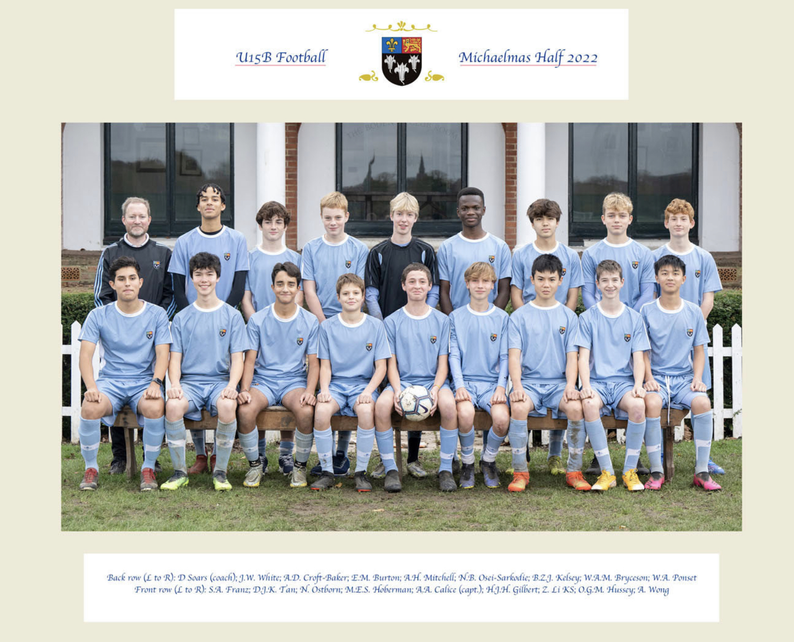
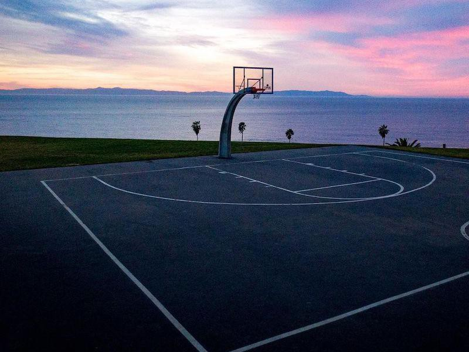

Sports
Football
My favourite sport by far, I played football mainly in the
U15 Bs this year. I hate to say that I've not scored many goals', but I play CDM, and am a tackling enthusiast.

Basketball
I recently started playing this, and it has been very fun. A lot quiter than football and requires some speedy thinking. It's a great shame that it takes 20 minutes to get to the court!

It seems to me that I have been slacking on the literature side lately. Time to start reading: